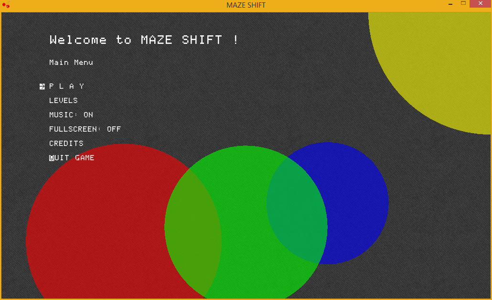
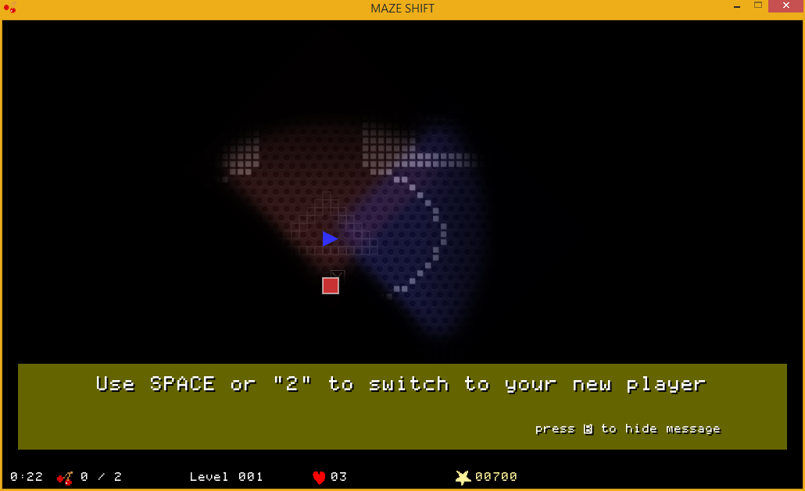
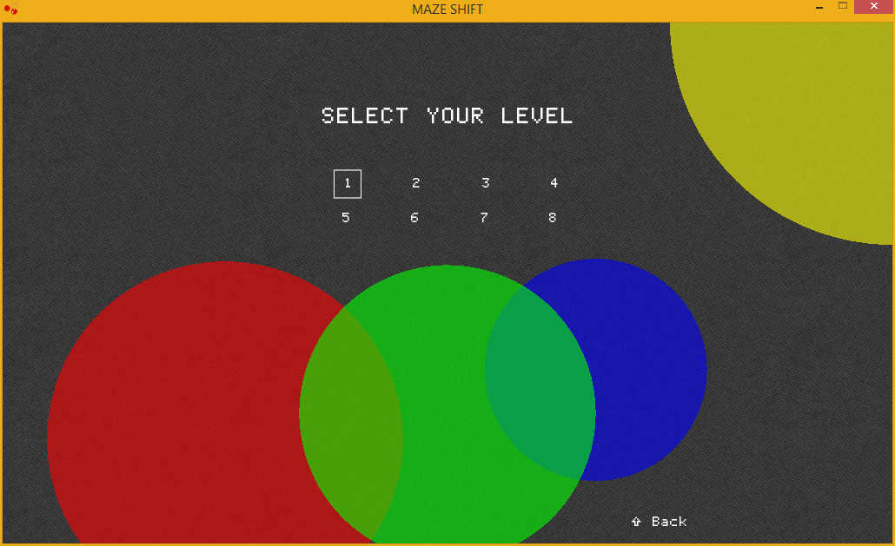
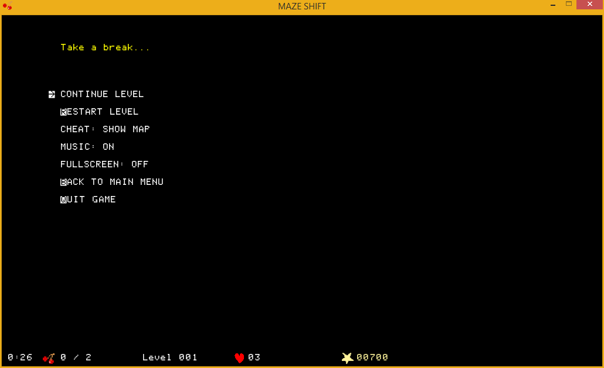
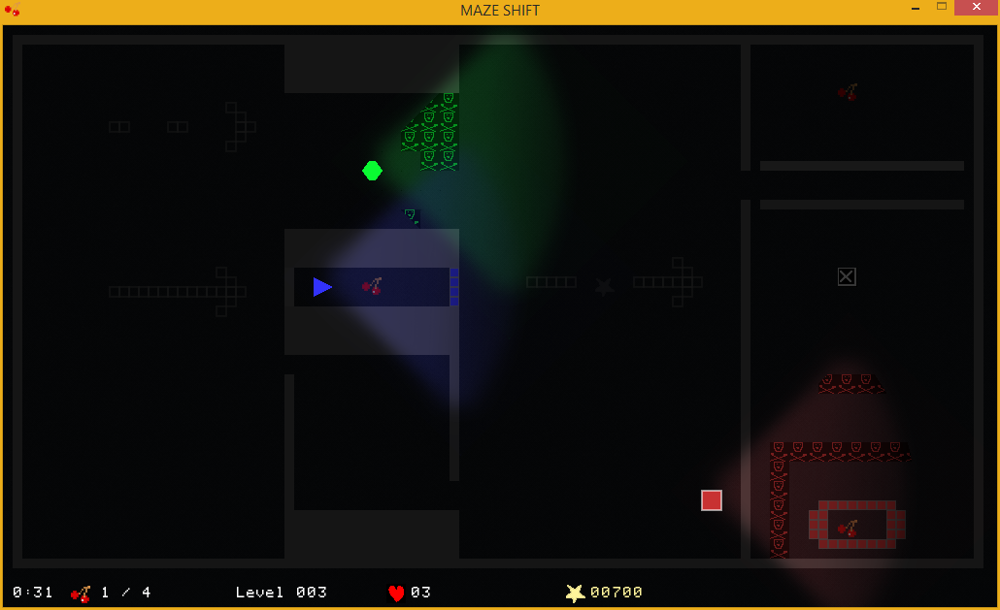

Download
See the download buttons in the sidebar to the right. To run it, follow the simple instructions below.
Screenshots





Installation
Windows:
Doubleclick release/makeshift.exe to run the game.
Linux & Mac:
Download and install Löve2D according to the instructions under https://www.love2d.org/. Run the command below to unzip and run the game from your Downloads folder. You could also try doubleclicking mazeshift.love.
unzip mazeshift.zip
cd mazeshift
love makeshift.love
Credits
Game Design & Levels: Moritz Willig www.rise-of-light.de Max Weller www.max-weller.de Background Music: IncompeTech www.incompetech.com Sound Effects: Classical 8-Bit Game Sounds connersaw8 Font: The Ultimate Apple II Font www.kreativekorp.com Background Images: Subtle Patterns www.subtlepatterns.com